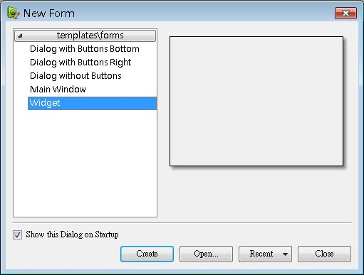

在開發Qt視窗程式時，可以使用Qt所附的Qt Designer，進行所視即所得的視窗外觀設計，並透過指令產生對應的*.h，Qt Designer的文件可以參考線上的 Qt Designer 手冊，這邊則簡介Qt Designer的一些簡單的使用方法。
Qt Designer執行檔為Qt安裝目錄下bin目錄的designer，執行之後可選擇要開發的元件類型，或執行選單中的[File/New Form]指令（或按Ctrl+N）：

接下來以設計一個簡單的Widget為例，上圖中選擇Widget，並按下Create按鈕，接下來出現以下畫面：
您可以使用拖曳的方式，將左邊的元件拖至中間的表單設計空間進行排列配置，例如拖曳一個QLabel及QPushButton，並適當的於畫面中直接修改顯示文字，於元件上按右鍵，可以取得各種功能項目進行設定：
接下來可以於右方的Signal/Slot Editor，按下+號可以新增Signal/Slot的連接，例如新增QPushButton的clicked()與表單元件的close()之連結：
您可以執行選單中的[Form/Preview]指令（或按Crtl+R）來預覽配置成果，接下來執行[File/Save Form]指令（或按Ctrl+S），假設將之儲存為HelloForm.ui檔案，這 個檔案一堆描述元件屬性的標籤所組成，可以使用uic（UI Compiler）指令來產生*.h檔案：
uic -o HelloForm.h HelloForm.ui
Qt4的uic會在HelloForm.h以inline函式的方式宣告並實作相關的程式，所以不需要如Qt3時再額外產生*.cpp檔案，產生的HelloForm.h檔案內容如下所示：
/********************************************************************************
** Form generated from reading ui file 'HelloForm.ui'
**
** Created: Mon Mar 10 18:04:39 2008
** by: Qt User Interface Compiler version 4.3.3
**
** WARNING! All changes made in this file will be lost when recompiling ui file!
********************************************************************************/
#ifndef HELLOFORM_H
#define HELLOFORM_H
#include <QtCore/QVariant>
#include <QtGui/QAction>
#include <QtGui/QApplication>
#include <QtGui/QButtonGroup>
#include <QtGui/QLabel>
#include <QtGui/QPushButton>
#include <QtGui/QWidget>
class Ui_Form
{
public:
QPushButton *pushButton;
QLabel *label;
void setupUi(QWidget *Form)
{
if (Form->objectName().isEmpty())
Form->setObjectName(QString::fromUtf8("Form"));
Form->resize(311, 212);
pushButton = new QPushButton(Form);
pushButton->setObjectName(QString::fromUtf8("pushButton"));
pushButton->setGeometry(QRect(120, 140, 75, 23));
label = new QLabel(Form);
label->setObjectName(QString::fromUtf8("label"));
label->setGeometry(QRect(50, 60, 231, 31));
retranslateUi(Form);
QObject::connect(pushButton, SIGNAL(clicked()), Form, SLOT(close()));
QMetaObject::connectSlotsByName(Form);
} // setupUi
void retranslateUi(QWidget *Form)
{
Form->setWindowTitle(
QApplication::translate("Form", "Form", 0, QApplication::UnicodeUTF8));
pushButton->setText(
QApplication::translate("Form", "PushButton", 0, QApplication::UnicodeUTF8));
label->setText(
QApplication::translate(
"Form", "<html>略...</html>", 0, QApplication::UnicodeUTF8));
Q_UNUSED(Form);
} // retranslateUi
};
namespace Ui {
class Form: public Ui_Form {}; // 範例將會把Form名稱改為HelloForm名稱
} // namespace Ui
#endif // HELLOFORM_H最後粗體字的部份，namespace的Ui名稱或class的Form名稱可以修改，例如把Form名稱改為HelloForm。
您有兩種方式可以使用這設計出來的元件，一個方式是直接使用setUi()方法設定一個QWidget實例給它並顯示之，例如：
#include <QApplication>
#include <QWidget>
#include "HelloForm.h"
int main(int argc, char *argv[]) {
QApplication app(argc, argv);
QWidget *window = new QWidget;
Ui::HelloForm *form = new Ui::HelloForm;
form->setupUi(window);
window->show();
return app.exec();
}
或者是自訂Widget，同時繼承QWidget與Ui::HelloForm的方式，記得執行setupUi()，例如：
#include <QApplication>
#include <QWidget>
#include "HelloForm.h"
class HelloWidget : public QWidget, public Ui::HelloForm {
public:
HelloWidget(QWidget *parent = 0) : QWidget(parent)
{ setupUi(this); }
};
int main(int argc, char *argv[]) {
QApplication app(argc, argv);
HelloWidget *window = new HelloWidget;
window->show();
return app.exec();
}程式撰寫完畢之後，執行以下指令進行建置：
qmake -project
qmake
make
qmake
make
下圖為執行成果的參考畫面：